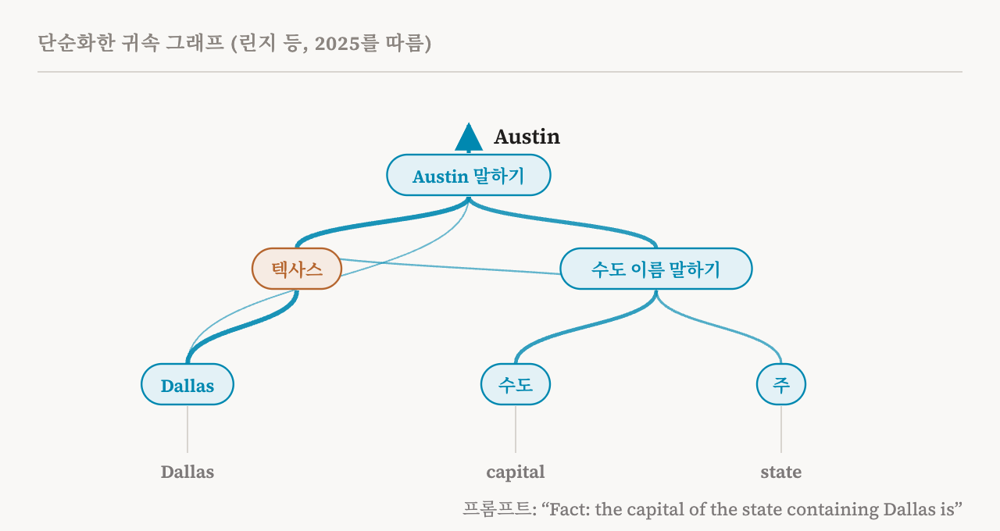
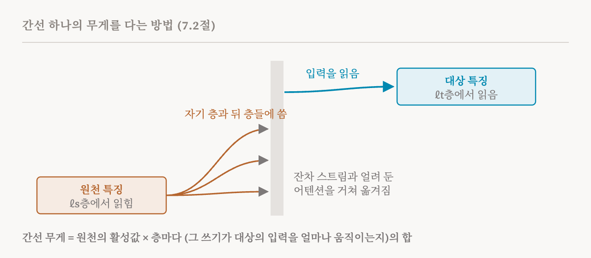

16편의 방법들은 모델 자체 안에서 회로를 찾습니다. 그 노드는 어텐션 헤드나 MLP 블록 같은 모델의 구성 요소이고, 이것들은 대부분 그 자체로는 이해하기 어렵습니다. '9.6번 헤드와 20층의 MLP가 중요하다'고 말하는 것은 위치를 말한 것이지, 아직 설명은 아닙니다. 이번 편은 이 책의 7.2절(55–57쪽)을 다룹니다. 이 절은 보완적인 접근을 설명합니다. 먼저 희소한 선형 특징으로 원래 모델의 계산을 근사하는, 더 해석하기 쉬운 대체 모델을 만들고, 그 안에서 회로를 찾는 것입니다.
회로 추적기
이 책이 회로 추적기(Circuit Tracer)라고 부르는 가장 잘 알려진 형태는 Anthropic 연구자들의 2025년 연구에서 나왔고, 13편의 층간 트랜스코더를 씁니다. 모델의 모든 MLP를 CLT로 바꾸되, 모델 자체의 어텐션과 잔차 스트림은 그대로 둡니다. 13편에서 본 것처럼, 프롬프트 하나에 대해서는 어텐션과 정규화를 얼리고 오차 항을 더해서 이 국소 대체 모델이 원래 모델의 활성값과 정확히 일치하게 만들 수 있습니다. 그 결과로 프롬프트마다 하나씩 귀속 그래프(attribution graph)가 생기는데, 그 주된 내부 노드는 MLP 블록이나 어텐션 헤드 전체가 아니라 희소한 CLT 특징입니다.
그다음 33편에서 다룰 자동 이름 붙이기 절차로 각 특징에 말로 된 설명을 붙일 수 있습니다. 그래서 회로를 읽는 사람은 번호가 매겨진 구성 요소의 그래프가 아니라 개념들의 그래프를 보게 됩니다.

도판의 예는 이 방법을 Claude 3.5 Haiku에 적용한 2025년의 한 연구에서 왔고, 이 책도 질의 수준 회로의 예로 이 연구를 인용합니다. "Fact: the capital of the state containing Dallas is"를 완성하라고 하면 모델은 "Austin"이라고 답합니다. 귀속 그래프를 보면 계산 중간에 '텍사스' 특징이 켜져 있고, 이 특징은 'Dallas'에서 입력을 받아 'Austin 말하기'로 이어집니다. 모델은 텍사스라는 단어를 한 번도 쓰지 않지만, 그래프는 모델이 그 중간 단계를 거친다는 것을 보여 줍니다. 도시에서 주로, 주에서 주도로 가는 두 단계 조회입니다.
간선의 무게를 다는 방법
이 책은 간선의 세기를 구하는 공식을 제시하는데, 수학을 몰라도 그 구성 요소는 알아 둘 만합니다. 어떤 위치와 층에서 일정한 세기로 켜진 원천 특징, 그리고 더 뒤쪽 층에 있는 대상 특징을 생각해 봅시다. 셋이 둘을 잇습니다.
첫째, 원천 특징이 씁니다. 13편에서 본 것처럼 CLT 특징은 자기 층과 그 뒤 모든 층의 재구성된 MLP 출력에, 층마다 따로 있는 디코더 벡터를 통해 씁니다. 둘째, 쓴 것이 이동합니다. 어떤 층과 위치에서 더해진 벡터는 잔차 스트림을 따라, 그리고 어텐션을 거쳐 다른 위치로 옮겨 가다가 대상의 입력에 이릅니다. 이 책은 이를 야코비 행렬(Jacobian)로 나타냅니다. 한 곳에 쓴 작은 변화가 다른 곳의 입력을 얼마나 바꾸는지 적은 숫자 표입니다. 셋째, 대상 특징이 읽습니다. 대상 특징은 인코더 벡터로 자기 입력에서 자기가 반응하는 부분을 골라냅니다.
간선의 무게는 원천 특징의 활성값에, 그 특징이 쓰는 층마다 그 쓰기가 결국 대상의 입력을 얼마나 움직이는지를 곱해, 그 층들에 걸쳐 더한 것입니다. 세부 사항이 하나 더 중요합니다. 이 방법은 어텐션 패턴과 정규화를 얼리고, 중간 MLP 출력을 지나 흐를 그래디언트를 막습니다. 그 결과 각 간선은 세 번째 특징을 거쳐 가는 영향이 아니라, 한 특징이 다른 특징에 주는 직접적인 영향만 담습니다. 그런 간접 경로는 그래프에서 직접 간선들의 사슬로 나타납니다.

이 회로들은 무엇이 다른가
이 책은 16편의 회로와 다른 점 두 가지를 짚습니다. 첫째, 노드가 거친 MLP 블록이나 어텐션 모듈이 아니라 세밀한 선형 특징이고, 자동으로 붙인 설명 덕분에 사람이 메커니즘을 훨씬 쉽게 따라갈 수 있습니다. 둘째, 간선의 뜻이 다릅니다. EAP와 그 친척들에서는 간선의 점수가 깨끗한 실행과 오염된 실행을 비교한 값입니다. 회로 추적기에서 간선은 이 프롬프트 하나에서 두 특징 사이의 직접적이고 입력에 따른 영향이며, 원천이 쓴 것 가운데 대상에 이르는 모든 것을 더한 값입니다.
이 방법은 프롬프트마다 어떤 특징이 켜졌고 그것들이 어떻게 상호작용하는지 보여 주는 희소한 그래프를 하나씩 만들기 때문에, 질의 수준 회로 찾기에 잘 맞습니다. Neuronpedia 같은 플랫폼은 대화형 버전을 제공해서, 독자가 공개 모델의 귀속 그래프를 직접 둘러볼 수 있습니다.
한계
이 책은 한계를 두 가지 들고, 13편의 단서들도 그대로 적용됩니다. 첫째, CLT는 MLP의 계산을 근사할 뿐이므로, 찾아낸 회로는 모델의 실제 메커니즘 가운데 일부만 담을 수 있습니다. 국소 대체 모델을 정확하게 만드는 오차 항은, 정의상 특징들이 설명하지 못하는 부분입니다. 둘째, 특징 수준의 그래프는 노드와 간선이 아주 많을 수 있습니다. 사람이 이해하려면 먼저 가지를 치거나, 묶거나, 다른 방식으로 줄여야 하고, 이런 단순화는 분석하는 사람이 내리는 선택입니다.
여기에 13편이 선형적인 설명 뒤의 가정들을 더합니다. 어텐션을 설명하지 않고 고정된 경로로 다루고, 정규화를 저장해 두고, MLP의 계산이 희소하고 선형적이라고 가정합니다. 15편은 희망적인 이야기를 하나 보탰습니다. 어텐션이 더 희소하도록 학습한 모델은 중간 구성 요소가 더 적은 귀속 그래프를 만들어서 읽기가 더 쉽습니다.
여기까지 오면
회로 추적기는 지금까지 가운데 가장 읽기 쉬운 회로를 줍니다. 프롬프트 하나에 대한 모델의 계산을 이름 붙은 개념들의 그래프로 바꾸고, 모델이 말하지 않는 단계까지 보여 줄 수 있습니다. 하지만 이것은 근사들로 조립한 대체 모델의 모습이고, 읽기 쉽다는 점 때문에 실제보다 더 완전해 보일 수 있습니다. 다음 편은 이것이 모든 회로에 던지는 질문을 다룹니다. 어떤 설명이 정말로 맞는지 어떻게 확인할까요?
| 용어 | 뜻 |
|---|---|
| 대체 모델 | 모델을 대신하는 해석 가능한 모델. 여기서는 모든 MLP를 층간 트랜스코더로 바꾼 것 |
| 회로 추적기 | CLT 대체 모델로 프롬프트마다 귀속 그래프를 만드는 2025년의 방법 |
| 귀속 그래프 | 프롬프트 하나에서 켜진 특징들과 그 사이의 직접적인 영향을 나타낸 그래프 |
| 원천 특징과 대상 특징 | 간선 하나의 시작과 끝에 있는 특징 |
| 디코더 벡터 | 특징이 어떤 층에 쓰는 방향 |
| 인코더 벡터 | 특징이 자기 입력에서 읽는 방향 |
| 야코비 행렬 | 한 곳의 작은 변화가 다른 곳의 값을 얼마나 바꾸는지 적은 표 |
| 그래디언트 막기 | 어떤 경로, 여기서는 중간 MLP를 지나는 영향을 막아 간선이 직접 효과만 재게 하는 것 |
| 오차 항 | 대체 모델의 특징들이 재구성하지 못한 활성값의 부분 |
| 가지치기와 묶기 | 약한 간선을 버리거나 관련된 특징을 모아 큰 그래프를 단순하게 만드는 것 |
18편에서는 회로가 정말로 행동을 설명하는지 확인하는 방법을 다룹니다. 필요성, 충분성, 인과적 스크러빙, 인과적 추상화입니다.